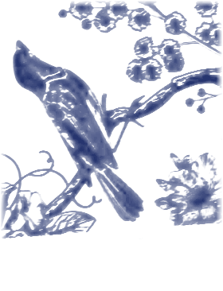

Notre mariage
M&O
Marie & Olivier, côté organisation
✦
Tous les outils du mariage sont réunis ici. Cette page est réservée à la famille et aux mariés ; pour chaque outil, c'est vous qui choisissez à qui donner le lien.
Pour les invités
Liens à imprimer sur les tables, le livret, ou à envoyer par message.

Pour les organisateurs
Marie, Olivier, les témoins et la famille proche. Les outils réservés demandent un mot de passe.